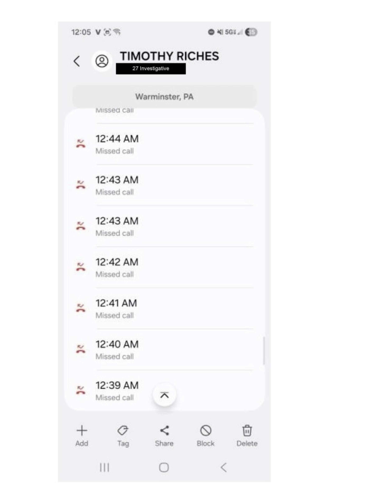
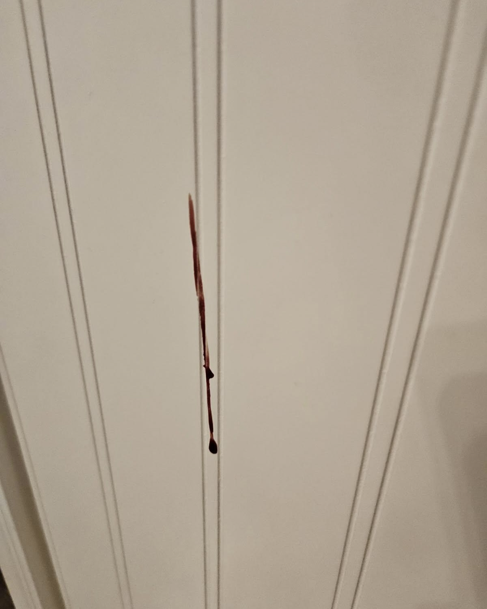
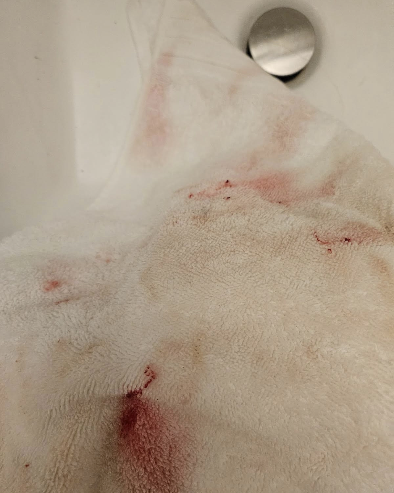
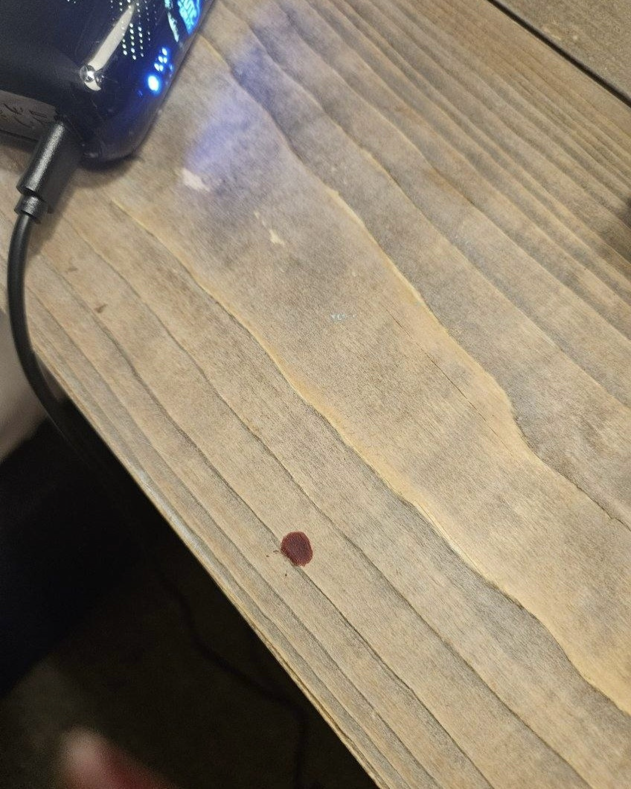
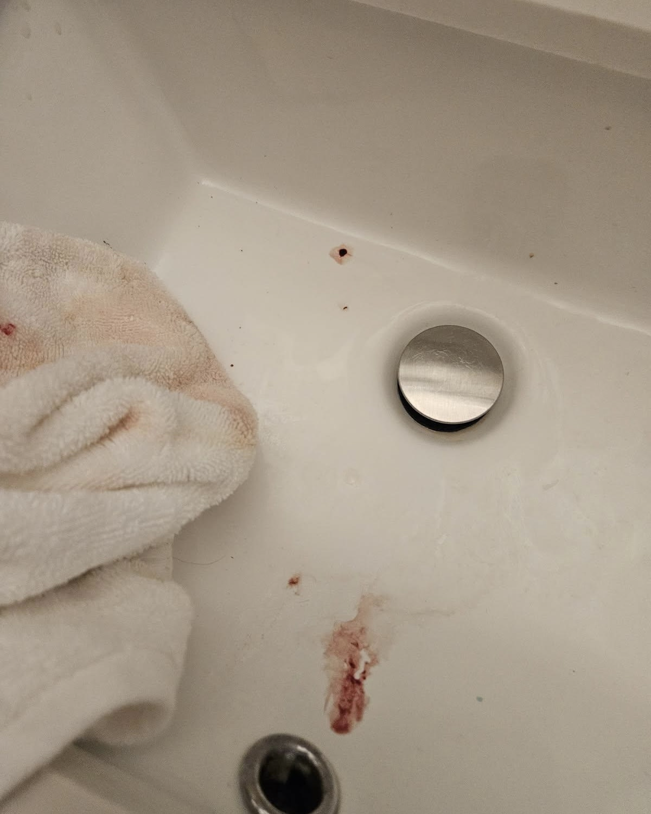
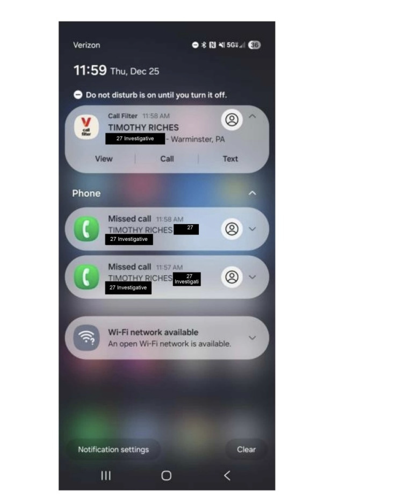

Over the course of 2025, Magnolia endured a pattern of escalating abuse at the hands of her boyfriend Jonathan Lee Riches — in Charlotte, in their shared home in Port Richey, and again on Christmas Eve in Leavenworth, Washington, where she was assaulted and left without her phone or a way home.
This timeline reconstructs that pattern using Chelan County Sheriff's Office records, dispatch logs, phone records, and text messages.
As of now, this is a living document being updated as records are obtained.
Magnolia was on a work trip with Jonathan in Charlotte. She first discovered his infidelity and confronted him.
He attacked her in the hotel, leaving her stranded with a permanent cheek injury, then drove their rental car back to Florida, where they live.
Magnolia stated there is a long history of assaults in their almost 3-year dating relationship.
After the Charlotte incident, JLR drove nine hours straight back to Florida, leaving Magnolia stranded with a massive suitcase, their dog Rio, and a dog house — no car, no warning. In the texts that followed, Magnolia documents the pattern in her own words; JLR responds with apologies and pleas to return.
Magnolia:
JLR:
These messages were later submitted as an exhibit attached to the Motion for Contempt in the Arkansas civil case against JLR — specifically as evidence of JLR's own admissions of guilt, which directly contradict his public denials.
The incident the Pasco County prosecutor is currently pressing charges against JLR for, as described by Magnolia in the Feb. 1, 2026 call to Pasco County Sherrif's Office:
JLR and Magnolia arrive in Seattle, WA on the way to a more secluded vacation rental in Leavenworth, WA.
Magnolia confronted Jonathan about communications with other women and pornography she observed on his work phone.
Jonathan became enraged and struck her with a closed fist multiple times — on the side of her head, her nose, and her ribs. When Magnolia grabbed her phone to dial 911, Jonathan took it from her and said "I will fucking kill you."
Magnolia believes she lost consciousness. Jonathan grabbed two bags, his personal phone, Magnolia's phone, and left. He left behind his work phone.
Between 12:39 and 12:44 AM, JLR calls Magnolia seven times.
His phone appears to be registered in D.C. under his dad's name. JLR had to call his own work phone in his attempts to reach Magnolia because he left it behind amid his rush to take Magnolia's phone as he fled the scene.

At 12:52 AM, JLR calls his work phone that he left behind. One minute later, at 12:53 AM, he calls Magnolia's phone (labeled "WIFE" in his contacts).
Two more calls from JLR to the work phone he accidentally left behind in the aftermath. It appears both of his phones are registered across the county under his dad's name.
CAD call initiated for domestic disturbance at the All Season River Inn. The call lasts approximately five minutes, ending at 09:23:44 AM.
Law enforcement arrives at the All Season River Inn. Medics get inside at 09:39:41 AM.
Deputies and medics document the Shenandoah room. Blood evidence on the wall, towels, nightstand, and sink.




Deputy Kyle Talley (K29), Chelan County Sheriff's Office, responds to the inn with four additional deputies.
He activates his AXON body-worn camera. He observes bruising around Magnolia's right eye, a red mark on her nose bridge, and her nose appears broken.
Magnolia's injuries are photographed by a female medic for documentation. Magnolia is transported to Cascade Medical Center for evaluation.
Deputy Talley requests Rivercom put an ATL (Attempt to Locate) out for Jonathan. He meets Magnolia at Cascade Medical Center, ER room 3. A medical release form is completed.
Magnolia reports Jonathan has been texting the work phone, telling her he's "100 miles away" and "in the middle of nowhere." The white Jeep Compass (WA reg CTA6791) at the hotel is later confirmed to belong to another guest's rental.
Texts arrive on the work phone JLR left behind.
JLR: "Hello. Answer the phone. I am in the middle of no where."
Two more missed calls from the phone registered under Timothy Riches arrive at 11:57 and 11:58 AM.

JLR: "For the sake of god. Answer the phone Magnolia. I am crying non stop. You ruined this Christmas."
Magnolia is discharged from Cascade Medical Center. Deputy Talley provides a courtesy ride back to the hotel.
Deputy McComas and Talley search the room before Magnolia re-enters. The hotel manager changes security codes for the front door and Magnolia's room.
Hotel manager Tony Smith contacts Rivercom Dispatch after JLR calls the front desk trying to reach Magnolia. The Sheriff had told Smith to call if JLR made contact.
JLR told Tony he had to leave early and accidentally took Magnolia's phone, and that he was headed to Snoqualmie.
Deputy Kyle Talley signs an affidavit for probable cause to arrest JLR for violating RCW 9A.36.021 (Assault in the 2nd Degree DV), RCW 9A.46.020.2B (Harassment — threats to kill DV), and RCW 9A.36.150 (Interfering with the reporting of domestic violence).
JLR texts Magnolia: "I'm in trouble. What did you do?"
He also calls, emails, and texts the hotel owners trying to get access to the room. The Sheriff had told owner Dean to call if they hear from him.
11:57:53 AM: >Magnolia calls Rivercom Dispatch asking to speak to a deputy after learning Deputy Talley is off for the weekend. A Chelan County deputy calls her back.
20:00:51 PM: >Magnolia calls again with updates — she's about to leave and wants to know if JLR has been picked up. Dispatch says an officer will call back.
20:18:16 PM: Deputy Tilton Andrew attempts the callback but gets no answer — her voicemail has not been set up.
Mangnolia cancels her original flight, books with a different airline, and boards without issue. Deputy Talley is notified by text.
08:57:47 AM: Magnolia calls Rivercom Dispatch requesting a callback from a deputy.
12:55:11 PM: >She calls again — she's talked to the Pasco County Sheriff's Office (Port Richey, FL — the home she and JLR shared) and says they need the case file sent to them. She reports she was able to track Jonathan's cell phone — he is driving eastbound through North Dakota.
She is back home in Florida. It is not known whether he is driving back to Florida or to another location.
Magnolia calls Rivercom Dispatch at 15:43:03 to provide her new phone number and share additional updates. Case marked CMPLT.
Jonathan's destination remains unknown.
Dec. 29, 2025: Follow-up contact with Magnolia (involvement date listed in supplemental incident report).
Dec. 30, 2025: Case 25C12789 turned over to Chelan County Prosecutors Office (TOP).
Mar. 26, 2026: Supplemental report generated.
Jan. 6, 2026: Magnolia files a records request.
Mar. 20, 2026: NY Post files a records request.
Mar. 24, 2026: Angie Hughes files a records request.
Magnolia calls the Pasco County Sheriff's Office to check on the status of an ex parte protection order granted on January 21 by a Garland County, Arkansas circuit court judge.
The order was sent to Pasco County to be served on JLR at the Baxley Lane address in Port Richey. She also asks whether she can file charges for prior assaults that occurred in Pasco County's jurisdiction, referencing a serious assault she did not report at the time because JLR threatened her.
Dispatch advises a desk officer will call her back within the hour.
A Washington State attorney representing JLR calls Pasco County dispatch. He reports that his client got out of the shower that morning at approximately 6:30 AM to see law enforcement leaving his driveway at the Baxley Lane address. Nothing was left on the door and no one returned.
The attorney says they are expecting possible service and wants to coordinate. Pasco dispatch cannot locate a call for that address at that time and suggests it may have been process service, providing a separate number
Magnolia contacts the Pasco County Sheriff's Office from Hot Springs, Arkansas, where she has been staying at an Airbnb since fleeing Florida.
She reports that a protection order has been served on JLR in Pasco County. She requests to file a police report for a prior assault — specifically the September 6-7, 2025 beating at their shared home in Port Richey, FL — as advised by Washington State authorities to help build the case.
She reports that she had surgery to repair her broken nose from the Washington assault and is recovering. She states JLR contacted her by email a couple weeks earlier trying to take assets out of her name, which prompted her to file the protection order. She tells the dispatcher that Washington authorities told her they intend to extradite JLR.
Pasco County patches Magnolia into a three-way call with Garland County Sheriff's Office dispatch in Hot Springs, Arkansas. A jurisdictional dispute follows: Pasco says Garland must initiate the report because Magnolia currently resides in their jurisdiction; Garland says reports should be filed where the crime occurred.
Magnolia pushes back, noting that Garland County deputies told her on Friday they could not take the report since the assault happened in Florida. She also clarifies she does not "live" in Garland County — her driver's license is from Pasco County, FL, and she is staying temporarily in an Airbnb for safety. No report is filed during the call.
Pasco County calls Magnolia back. They tell her Garland County will reach out to her and to call Pasco back once Garland makes contact.
Corporal Yarborough from the Garland County Sheriff's Office calls Pasco County dispatch to follow up on the earlier three-way call. He is patched through to request more information on how Pasco handles the reporting process. Pasco dispatch notes the call and advises a deputy or sergeant will call him back.
View the full JLR doc-ket — filings, records, and the Google Drive folder.